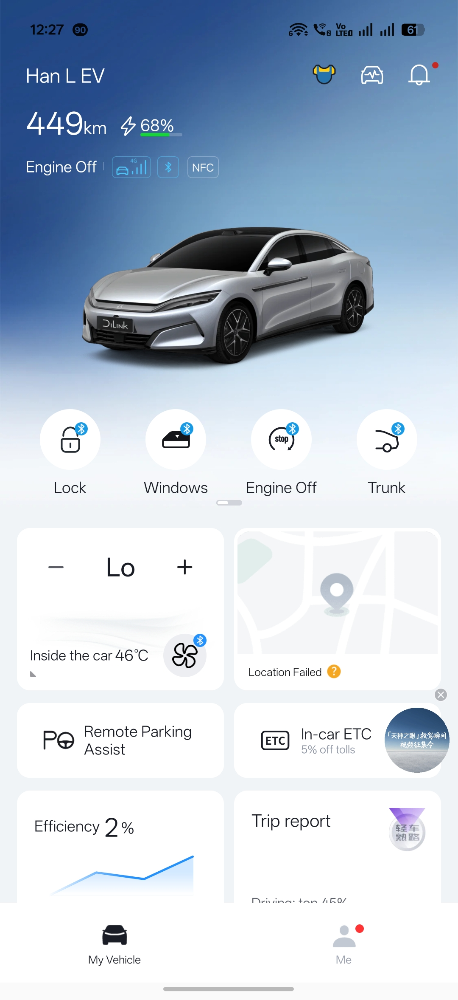
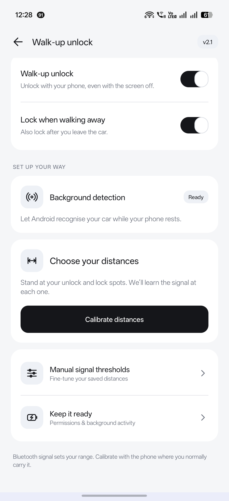
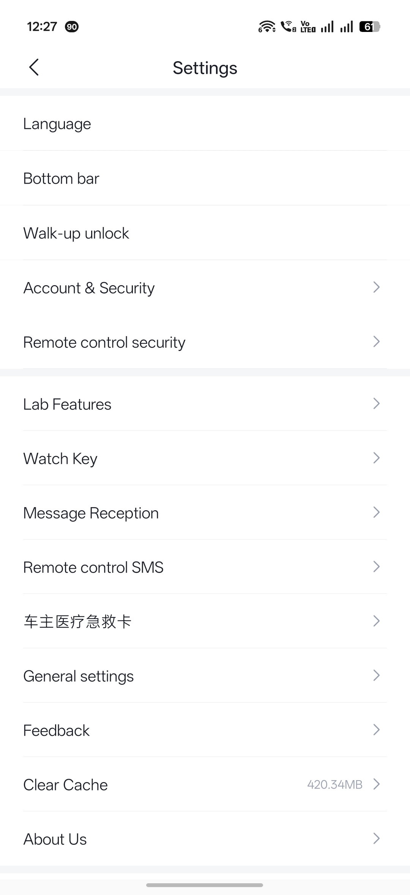
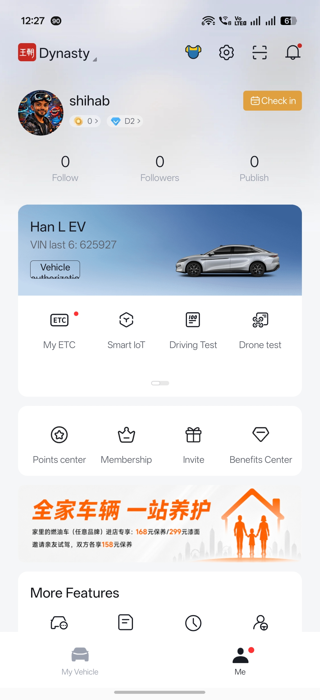

Неофициальный проект сообщества
Ваше приложение BYD.
На вашем языке.
BYD Android теперь включает испанский и упрощённый китайский наряду с английским, арабским и русским. Загружайте переводы в настройках, меняйте нижние вкладки и используйте прежние функции приближения. Испанский перевод ещё проверяется.
Бесплатно · Прямая установка APK · Root не требуется
Если у вас уже стоит совместимая сборка этого проекта, установите обновление поверх неё. Оригинальное приложение BYD сначала нужно удалить.
Узнавайте о новых версиях
Подпишитесь на наш Telegram-канал и включите уведомления, чтобы узнавать о выходе новых версий.
Внутри приложения
Скриншоты предоставлены автором проекта. Нажмите на изображение, чтобы открыть его в полном размере.




1. Установка или обновление
- Скачайте APK на телефон Android и откройте загруженный файл.
- Если Android попросит, разрешите этому браузеру или файловому менеджеру устанавливать приложения, затем следуйте инструкциям установщика.
- Откройте BYD и войдите в свой аккаунт. В разделе Я → Настройки выберите язык и вкладки нижней панели.
Обновляете совместимую сборку проекта? Установите поверх существующей, чтобы сохранить локальные настройки. Используется прежний ключ подписи. Может потребоваться повторный вход.
Оригинальное приложение BYD нужно удалить перед установкой APK: ключи подписи отличаются. При удалении стираются локальные данные; возможно, потребуется снова войти и настроить Bluetooth-ключ.
2. Настройка входа при приближении
- Убедитесь, что действующий Bluetooth-ключ BYD позволяет вручную отпирать и запирать автомобиль.
- Откройте Я → Настройки → Вход при приближении и включите функцию. Разрешите доступ к устройствам поблизости и оставьте Bluetooth включённым.
- Откройте Обнаружение в фоне и следуйте указаниям для вашего ключа. Для поддерживаемых ключей с постоянным адресом используется однократная настройка Android; для меняющихся адресов — обнаружение по сигналу авто.
- Нажмите Настроить расстояния. Измерьте точки отпирания и запирания с телефоном в привычном месте и сохраните результат.
- При желании включите Запирать при удалении. В разделе Всегда наготове настройте разрешение на фоновую работу приложения.
Ручные пороги сигнала также доступны. Во время калибровки автоматические команды приостановлены. Карман и окружение влияют на сигнал: это измерение сигнала, а не точного расстояния в метрах.
Что входит в релиз
- Английский, арабский, русский, испанский и режим исходного текста на упрощённом китайском.
- Подписанные пакеты переводов с независимой ручной загрузкой; автообновление по умолчанию выключено. Для применения полностью закройте BYD и откройте снова.
- Обновлённая панель переводов с корректным направлением справа налево для арабского и временем последней проверки на выбранном языке.
- Исправления переводов, включая повторную отправку кода, с сохранением работы приближения, Bluetooth и камер кругового обзора.
- Сохранены калибровка, необязательная блокировка при удалении и настройка вкладок; версия функции приближения не меняется.
Совместимость и обратная связь
Нужен телефон Android с 64-битным процессором ARM. Добавленное обнаружение использует API Android 8+; обнаружение устройств-компаньонов требует Android 12+ и поддержки телефона. Для автоматического отпирания нужен работающий Bluetooth-ключ BYD.
Испанский перевод ещё проверяется. Часть динамического контента и изображений остаётся на китайском. Работа в фоне и доступные функции зависят от телефона и автомобиля. После принудительной остановки откройте BYD для возобновления обнаружения. Запуск камер зависит от автомобиля и сервиса BYD.
Возникла проблема? Укажите телефон, версию Android, модель авто, версию приложения и шаги воспроизведения. Удалите данные аккаунта, VIN и местоположение из скриншотов или журналов.
Сообщить о проблемеНас поддерживают
Спасибо сообществам и авторам, поддерживающим этот проект.

{kind=link}
{kind=link}
{kind=link}
{kind=link}